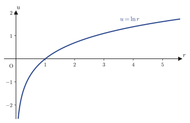

Chapter 44Coordinate Transformations and the Laplacian
In Chapter 19, for a scalar field $f(x,y,z)$, we defined the Laplacian $\Delta f=\nabla^2f=\pdiff{^2f}{x^2}+\pdiff{^2f}{y^2}+\pdiff{^2f}{z^2}$ as the “divergence of the gradient.” Then, in Chapters 42 and 43, we saw that the vibration of a string and the way heat propagates obey partial differential equations containing this Laplacian (the wave equation and the heat equation). However, the examples we treated in Chapter 43 were nothing but rectangular plates and strings of finite length—that is, shapes in which Cartesian coordinates can be used quite naturally as they are. What if the region we want to study were the membrane of a round drum, or a cylindrical metal rod, or the electron cloud around a spherical atomic nucleus? When the boundary is a circle or a sphere, trying to use the Cartesian Laplacian $\partial^2/\partial x^2+\partial^2/\partial y^2+\partial^2/\partial z^2$ as it stands makes even writing down the boundary conditions a struggle. The goal of this chapter is just one thing: to rewrite the same operator, the Laplacian, in coordinates adapted to the symmetry (polar, cylindrical, and spherical coordinates).
All the tools are already in place. We simply apply the chain rule for multivariable functions, learned in Chapter 6, repeatedly to the coordinate transformation $x=r\cos\theta,\ y=r\sin\theta$. However, hidden in the single phrase “apply repeatedly” is one of the most laborious computations in university mathematics, in which second-order partial derivatives, the product rule, and trigonometric identities are entangled in layer upon layer. For polar coordinates, the original notes (the source) write this computation out to the end; for cylindrical coordinates they dispose of the matter with the result alone, in a single line; and for spherical coordinates they run out of steam partway through the computation—after the very first line—and three blank pages follow, an ending that is touchingly human. In this chapter we carry the derivation through to the end for all three coordinate systems, including the spherical-coordinate computation on which the notes gave out. For spherical coordinates we also present a shortcut, different from the route the notes took, that gives a much clearer view of the computation. The secret of this shortcut is a surprising one: “reuse the result of the polar-coordinate computation twice, with the names of the variables relabeled.”
- Follow, without skipping a single line, the computation that uses the multivariable chain rule to rewrite the Cartesian Laplacian $\partial^2/\partial x^2+\partial^2/\partial y^2$ in polar coordinates as $\nabla^2=\partial^2/\partial r^2+(1/r)\partial/\partial r+(1/r^2)\partial^2/\partial\theta^2$
- What the symbols $r_x,\theta_x,r_{xx},\theta_{xx}$ and the like that appear along the way mean: what is held fixed, and with respect to what we differentiate
- Why the cylindrical-coordinate Laplacian $\nabla^2=\partial^2/\partial r^2+(1/r)\partial/\partial r+(1/r^2)\partial^2/\partial\theta^2+\partial^2/\partial z^2$ is obtained simply by adding a $z$ term to the polar-coordinate result
- Derive the spherical-coordinate Laplacian $\nabla^2=\partial^2/\partial r^2+(2/r)\partial/\partial r+(1/r^2)\partial^2/\partial\theta^2+\dfrac{\cos\theta}{r^2\sin\theta}\partial/\partial\theta+\dfrac{1}{r^2\sin^2\theta}\partial^2/\partial\varphi^2$ in two ways: by direct chain-rule computation, and by the shortcut that reuses the polar-coordinate result
- Verify concrete examples of harmonic functions (functions satisfying $\nabla^2u=0$)—$\ln r$, $1/r$ (the Coulomb potential), $r^2\cos2\theta$, $r^2(3\cos^2\theta-1)/2$—using the Laplacian formula in the respective coordinate system
- Lay the groundwork for the chapters that follow, which treat the Schrödinger equation in spherical and cylindrical coordinates and the wave functions of the hydrogen atom
Source notes: Yasuhide Mochizuki, Mathematics Notes: Partial Differential Equations, pp. 23–28.
44.1 Why Change Coordinates? — Symmetry and the Laplacian
In the margin to the right of the heading “Second-Order Linear Partial Differential Equations” in the original notes, there is a handwritten entry, “Cylindrical Coordinate / Spherical Coordinate.” This is a memo, written by the author himself, announcing that cylindrical and spherical coordinates will be treated later in Sections 44.3 and 44.4 (this chapter follows that announcement: after the polar coordinates of Section 44.2, it treats the Laplacian in cylindrical coordinates in Section 44.3 and in spherical coordinates in Section 44.4).
First, let us see with a concrete picture just how troublesome it is to write the boundary condition when we work with the Laplacian in Cartesian coordinates. Consider the membrane of a circular drum of radius $R$ (or the temperature distribution in a rod with a circular cross section). The condition on the outer edge of the membrane (plate), that is, on the boundary, can be written in polar coordinates as
$$ r=R $$which is a single equation, as simple as could be. If we try to write the same boundary in Cartesian coordinates, however, we get
$$ x^2+y^2=R^2 $$This is a form in which $x$ and $y$ cannot be separated. If we try to solve the partial differential equation by the method of separation of variables (Chapter 43), then, since the boundary condition has a form in which $x,y$ cannot be separated, we are helpless as long as we stay in Cartesian coordinates. In polar coordinates, on the other hand, the boundary condition $r=R$ separates neatly into the form “fix $r$ and vary $\theta$,” so it is exceptionally well suited to the method of separation of variables.
Why?: Even after changing coordinates, we want to describe the “same function”
What we should note here is that even if we change coordinates, the function $u$ itself does not change. For example, the temperature distribution $u$ is a rule that assigns exactly one real number (the temperature) to each point of the drum membrane, and whether we call that point by the name $(x,y)$ or by the name $(r,\theta)$ is merely a matter of human convenience. All that changes is “as a function of what” we write $u$, that is, whether we write $u=u(x,y)$ or $u=u(r,\theta)$. The partial differential equation $\partial^2u/\partial x^2+\partial^2u/\partial y^2=0$ is also a relation satisfied by one and the same function $u$, so it must be possible to rewrite it using $r,\theta$, and the form obtained by actually carrying out this rewriting is the formula we seek in this chapter.
The tool for this rewriting is the chain rule, which we learned in Chapter 6. In general, when $u$ is a function of $r,\theta$ and $r,\theta$ are in turn functions of $x,y$ (so that $u(r(x,y),\theta(x,y))$ is a “function of a function”), to differentiate $u$ partially with respect to $x$ we use the chain rule in the form
\begin{equation} \pdiff ux=\pdiff ur\pdiff rx+\pdiff u\theta\pdiff{\theta}{x} \label{eq:44-chainrule-general} \end{equation}From here on the formulas will get long, so instead of $\partial u/\partial x$ we denote partial derivatives by the subscript (lower-index) notation $u_x$. Similarly, $u_{xx}=\partial^2u/\partial x^2$ and $u_{r\theta}=\partial^2u/\partial r\,\partial\theta$. With this notation, Eq. \eqref{eq:44-chainrule-general} can be written compactly as
\begin{equation} u_x=u_r r_x+u_\theta\theta_x \label{eq:44-chainrule-short} \end{equation}Here $r_x=\partial r/\partial x$ and $\theta_x=\partial\theta/\partial x$ are the partial derivatives of the functions $r(x,y),\theta(x,y)$ with respect to $x$ (the rates of change of $r,\theta$ when we fix $y$ and move only $x$), and they are quantities that can be computed in advance, independently of $u$. In the next section, we proceed as follows: first we compute all of the “partial derivatives of the coordinate transformation,” beginning with these $r_x,\theta_x$, and then we apply Eq. \eqref{eq:44-chainrule-short} twice to build up to $u_{xx}$.
Example 44.1: Checking the chain rule — the case $u=r$
For $u(x,y)=\sqrt{x^2+y^2}$ (that is, $u=r$), compute $u_x$ at the point $(x,y)=(3,4)$ in two ways, (a) by differentiating directly in Cartesian coordinates and (b) by using the chain rule of Eq. \eqref{eq:44-chainrule-short}, and verify that the two results agree. In (b), you may use the facts that $u_r=1,\ u_\theta=0$ ($u=r$ does not depend on $\theta$) and the formulas $r_x=\cos\theta$ and $\theta_x=-\sin\theta/r$, which will be derived in the next section.
Solution. (a) Differentiating directly, $u_x=\pdiff{}{x}\sqrt{x^2+y^2}=\dfrac{x}{\sqrt{x^2+y^2}}$, so substituting $(3,4)$ gives
$$ u_x\big|_{(3,4)}=\frac{3}{\sqrt{3^2+4^2}}=\frac{3}{5} $$(b) Using the chain rule in Eq. \eqref{eq:44-chainrule-short}, we have $u_x=u_r r_x+u_\theta\theta_x=1\cdot\cos\theta+0\cdot\left(-\dfrac{\sin\theta}{r}\right)=\cos\theta$. At the point $(3,4)$ we have $r=\sqrt{3^2+4^2}=5$ and $\cos\theta=x/r=3/5$, so
$$ u_x\big|_{(3,4)}=\cos\theta=\frac{3}{5} $$which agrees with the result $3/5$ of (a). (Checked with SymPy.) Thus, although a computation that uses the chain rule seems at first sight to be a detour, when $u$ can be treated as a simple expression in $r,\theta$ (in this example, $u=r$), it often gives a clearer picture than differentiating directly with respect to $x,y$. The goal of the next section is to carry this chain rule all the way through to $u_{xx}+u_{yy}$ (the sum of the second derivatives).
44.2 Deriving the Laplacian in Polar Coordinates
Definition 44.1: Polar coordinates
For a point $(x,y)$ in the plane (other than the origin), the pair $(r,\theta)$ consisting of the distance $r$ from the origin ($r\gt0$) and the angle $\theta$ measured counterclockwise from the positive direction of the $x$-axis ($0\le\theta\lt2\pi$, in radians) is called the polar coordinates of that point. The relationship with Cartesian coordinates is given by
\begin{equation} \begin{cases} x=r\cos\theta \\ y=r\sin\theta \end{cases} \qquad\Longleftrightarrow\qquad \begin{cases} r=\sqrt{x^2+y^2} \\ \theta=\tan^{-1}\dfrac yx \end{cases} \label{eq:44-polar-def} \end{equation}Here $\tan^{-1}$ is the inverse function of the tangent (the arctangent), and it returns the angle $\theta$ satisfying $\tan\theta=y/x$. However, $\tan^{-1}$ alone does not tell us the signs of $x,y$ (that is, which quadrant the point lies in), so when we actually determine $\theta$ we need to look at the signs of $x,y$ and decide the quadrant (in the calculations of this chapter we only differentiate $\theta$, so you need not worry about this point).
Our goal is to rewrite the Laplacian $u_{xx}+u_{yy}$ in Cartesian coordinates (where $u=u(x,y)$ is an arbitrary function that is partially differentiable twice) using only partial derivatives with respect to $r,\theta$, by means of Eq. \eqref{eq:44-polar-def}. To do so, we first compute the basic quantities obtained by differentiating $r,\theta$ partially with respect to $x,y$. Also, when computing the partial derivative $\partial r/\partial x$, please always keep in mind that we “fix $y$ and move only $x$” (the same applies to all the other partial derivatives).
Derivation (1): Computing $r_x,\theta_x,r_{xx},\theta_{xx}$
We differentiate $r=\sqrt{x^2+y^2}$ in Eq. \eqref{eq:44-polar-def} partially with respect to $x$, regarding $y$ as a constant. Differentiating $\sqrt{\ }$ is an instance of differentiating a composite function ($\left(\sqrt{f}\right)'=f'/(2\sqrt f)$), so
$$ r_x=\pdiff rx=\pdiff{}{x}\sqrt{x^2+y^2}=\frac{2x}{2\sqrt{x^2+y^2}}=\frac{x}{\sqrt{x^2+y^2}}=\frac xr $$Here the last equality simply replaces the denominator by $r$ using $r=\sqrt{x^2+y^2}$. Further, substituting $x=r\cos\theta$ (Eq. \eqref{eq:44-polar-def}), we obtain
\begin{equation} r_x=\frac{r\cos\theta}{r}=\cos\theta \label{eq:44-rx} \end{equation}Next we differentiate $\theta=\tan^{-1}(y/x)$ partially with respect to $x$. Using the derivative formula for the arctangent, $\left(\tan^{-1}f\right)'=f'/(1+f^2)$ (here $f=y/x$ and $f'=\partial f/\partial x=-y/x^2$; we fixed $y$ and used the quotient rule), we get
$$ \theta_x=\pdiff{}{x}\tan^{-1}\frac yx=\left(-\frac{y}{x^2}\right)\cdot\frac{1}{1+\left(\dfrac yx\right)^2}=-\frac{y}{x^2+y^2} $$(In the last equality, we multiplied $-y/x^2$ by $x^2/(x^2+y^2)$, the reciprocal of $1+(y/x)^2=(x^2+y^2)/x^2$, and canceled $x^2$.) Substituting $x^2+y^2=r^2$ and $y=r\sin\theta$, we obtain
\begin{equation} \theta_x=-\frac{r\sin\theta}{r^2}=-\frac{\sin\theta}{r} \label{eq:44-thetax} \end{equation}Next we find the second-order derivatives $r_{xx},\theta_{xx}$. We have $r_{xx}=\partial r_x/\partial x$, but $r_x=\cos\theta$ in Eq. \eqref{eq:44-rx} is not written directly as a function of $x$ (it goes through $\theta$), so here too the chain rule is needed. To differentiate $\cos\theta$ with respect to $x$, we note that $\theta$ is a function of $x$ and use the formula for differentiating a composite function:
\begin{equation} r_{xx}=\pdiff{}{x}(\cos\theta)=\pdiff{}{\theta}(\cos\theta)\cdot\pdiff{\theta}{x}=(-\sin\theta)\cdot\left(-\frac{\sin\theta}{r}\right)=\frac{\sin^2\theta}{r} \label{eq:44-rxx} \end{equation}(We substituted $\theta_x=-\sin\theta/r$ from Eq. \eqref{eq:44-thetax}.) Similarly, for $\theta_{xx}=\partial\theta_x/\partial x$, this time $\theta_x=-\sin\theta/r$ in Eq. \eqref{eq:44-thetax} contains both $\theta$ and $r$, so we use the product rule and the chain rule at the same time:
$$ \theta_{xx}=\pdiff{}{x}\left(-\frac{\sin\theta}{r}\right) =\pdiff{}{r}\!\left(-\frac{\sin\theta}{r}\right)\!\pdiff rx+\pdiff{}{\theta}\!\left(-\frac{\sin\theta}{r}\right)\!\pdiff{\theta}{x} =\frac{\sin\theta}{r^2}\cdot\cos\theta+\left(-\frac{\cos\theta}{r}\right)\!\left(-\frac{\sin\theta}{r}\right) $$(For the first term, we differentiated $-\sin\theta/r$ partially with respect to $r$ (treating $\theta$ as a constant) to get $\sin\theta/r^2$, and multiplied this by $r_x=\cos\theta$. For the second term, we differentiated $-\sin\theta/r$ partially with respect to $\theta$ (treating $r$ as a constant) to get $-\cos\theta/r$, and multiplied this by $\theta_x=-\sin\theta/r$.) Both terms have the form $\sin\theta\cos\theta/r^2$, so they combine into
\begin{equation} \theta_{xx}=\frac{\sin\theta\cos\theta}{r^2}+\frac{\sin\theta\cos\theta}{r^2}=\frac{2\sin\theta\cos\theta}{r^2} \label{eq:44-thetaxx} \end{equation}This gives us all the first- and second-order partial derivatives with respect to $x$.
Next, we use these to assemble $u_x,u_{xx}$. Regarding $u=u(x,y)$ as a function $u(r(x,y),\theta(x,y))$ of $r,\theta$ and applying the chain rule of Eq. \eqref{eq:44-chainrule-short} as it stands, we get
\begin{equation} u_x=u_r r_x+u_\theta\theta_x \label{eq:44-ux} \end{equation}We differentiate this once more with respect to $x$ to form $u_{xx}$. The right-hand side is a sum of terms of the form (a function of $x$) × (a function of $x$), so we must use the product rule twice:
\begin{equation} u_{xx}=\pdiff{}{x}u_x=\pdiff{}{x}(u_r r_x)+\pdiff{}{x}(u_\theta\theta_x) =\bigl(u_{rx}r_x+u_r r_{xx}\bigr)+\bigl(u_{\theta x}\theta_x+u_\theta\theta_{xx}\bigr) \label{eq:44-uxx-setup} \end{equation}(Differentiating $u_r r_x$ by the product rule gives the sum of the term $u_{rx}r_x$, obtained by differentiating $u_r$, and the term $u_r r_{xx}$, obtained by differentiating $r_x$. The same holds for $u_\theta\theta_x$.) The quantities $u_{rx}=\partial u_r/\partial x$ and $u_{\theta x}=\partial u_\theta/\partial x$ that have appeared here can also be written by a chain rule of exactly the same form as Eq. \eqref{eq:44-ux}, once we recall that $u_r,u_\theta$ are functions of $r,\theta$:
\begin{equation} u_{rx}=u_{rr}r_x+u_{r\theta}\theta_x,\qquad u_{\theta x}=u_{\theta r}r_x+u_{\theta\theta}\theta_x \label{eq:44-urx-uthetax} \end{equation}Substituting Eq. \eqref{eq:44-urx-uthetax} into Eq. \eqref{eq:44-uxx-setup}, we obtain
\begin{equation} u_{xx}=\bigl\{(u_{rr}r_x+u_{r\theta}\theta_x)r_x+u_r r_{xx}\bigr\}+\bigl\{(u_{\theta r}r_x+u_{\theta\theta}\theta_x)\theta_x+u_\theta\theta_{xx}\bigr\} \label{eq:44-uxx-expand} \end{equation}All that remains is to substitute $r_x=\cos\theta,\ \theta_x=-\sin\theta/r,\ r_{xx}=\sin^2\theta/r,\ \theta_{xx}=2\sin\theta\cos\theta/r^2$, which we found in Eqs. \eqref{eq:44-rx}–\eqref{eq:44-thetaxx}:
\begin{equation} u_{xx}=\left(u_{rr}\cos\theta-u_{r\theta}\frac{\sin\theta}{r}\right)\cos\theta+u_r\frac{\sin^2\theta}{r} -\left(u_{\theta r}\cos\theta-u_{\theta\theta}\frac{\sin\theta}{r}\right)\frac{\sin\theta}{r}+u_\theta\frac{2\sin\theta\cos\theta}{r^2} \label{eq:44-uxx-substituted} \end{equation}Now, if $u$ is twice continuously differentiable, then by Schwarz's theorem (Chapter 6, Theorem 6.1) the order of mixed partial derivatives can be interchanged, that is, $u_{r\theta}=u_{\theta r}$. Using this fact to combine the two terms containing $u_{r\theta}$ and $u_{\theta r}$ in Eq. \eqref{eq:44-uxx-substituted} (both have the coefficient $-\sin\theta\cos\theta/r$), we obtain
\begin{equation} \boxed{u_{xx}=\cos^2\theta\,u_{rr}-\frac{2\sin\theta\cos\theta}{r}u_{r\theta}+\frac{\sin^2\theta}{r}u_r+\frac{\sin^2\theta}{r^2}u_{\theta\theta}+\frac{2\sin\theta\cos\theta}{r^2}u_\theta} \label{eq:44-uxx-final} \end{equation}This is the final form of the second-order partial derivative in the $x$ direction. Next, we repeat exactly the same procedure for the $y$ direction.
Derivation (2): Computing $r_y,\theta_y,r_{yy},\theta_{yy}$ and $u_{yy}$
This time we fix $x$ and differentiate partially with respect to $y$. From $r=\sqrt{x^2+y^2}$ we get
\begin{equation} r_y=\frac{y}{\sqrt{x^2+y^2}}=\frac yr=\frac{r\sin\theta}{r}=\sin\theta \label{eq:44-ry} \end{equation}(The flow of the computation is the same as for $r_x$; we simply substituted $y=r\sin\theta$.) When we differentiate $\theta=\tan^{-1}(y/x)$ partially with respect to $y$, this time $\partial(y/x)/\partial y=1/x$ (with $x$ fixed), so we get
\begin{equation} \theta_y=\frac{1}{x}\cdot\frac{1}{1+\left(\dfrac yx\right)^2}=\frac{x}{x^2+y^2}=\frac{r\cos\theta}{r^2}=\frac{\cos\theta}{r} \label{eq:44-thetay} \end{equation}The second-order derivatives are found by the same procedure as in the case of $x$:
\begin{equation} r_{yy}=\pdiff{}{\theta}(\sin\theta)\cdot\theta_y=\cos\theta\cdot\frac{\cos\theta}{r}=\frac{\cos^2\theta}{r} \label{eq:44-ryy} \end{equation} \begin{equation} \theta_{yy}=\pdiff{}{r}\!\left(\frac{\cos\theta}{r}\right)\!r_y+\pdiff{}{\theta}\!\left(\frac{\cos\theta}{r}\right)\!\theta_y =-\frac{\cos\theta}{r^2}\cdot\sin\theta-\frac{\sin\theta}{r}\cdot\frac{\cos\theta}{r}=-\frac{2\sin\theta\cos\theta}{r^2} \label{eq:44-thetayy} \end{equation}(Note that the sign is exactly opposite to that of $\theta_{xx}$.) Using these and repeating exactly the same procedure as for Eqs. \eqref{eq:44-uxx-setup}–\eqref{eq:44-uxx-final} (we only have to read $x\to y$), we get
$$ u_y=u_r r_y+u_\theta\theta_y,\qquad u_{yy}=\bigl\{(u_{rr}r_y+u_{r\theta}\theta_y)r_y+u_r r_{yy}\bigr\}+\bigl\{(u_{\theta r}r_y+u_{\theta\theta}\theta_y)\theta_y+u_\theta\theta_{yy}\bigr\} $$Substituting Eqs. \eqref{eq:44-ry}–\eqref{eq:44-thetayy} into these, and combining $u_{r\theta}=u_{\theta r}$ in the same way by Schwarz's theorem, we find that
\begin{equation} \boxed{u_{yy}=\sin^2\theta\,u_{rr}+\frac{2\sin\theta\cos\theta}{r}u_{r\theta}+\frac{\cos^2\theta}{r}u_r+\frac{\cos^2\theta}{r^2}u_{\theta\theta}-\frac{2\sin\theta\cos\theta}{r^2}u_\theta} \label{eq:44-uyy-final} \end{equation}holds.
Derivation (3): Completing the computation of $u_{xx}+u_{yy}$
Let us write Eq. \eqref{eq:44-uxx-final} and Eq. \eqref{eq:44-uyy-final} side by side and add the two equations.
$$ \begin{aligned} u_{xx}&=\cos^2\theta\,u_{rr}-\frac{2\sin\theta\cos\theta}{r}u_{r\theta}+\frac{\sin^2\theta}{r}u_r+\frac{\sin^2\theta}{r^2}u_{\theta\theta}+\frac{2\sin\theta\cos\theta}{r^2}u_\theta\\[4pt] u_{yy}&=\sin^2\theta\,u_{rr}+\frac{2\sin\theta\cos\theta}{r}u_{r\theta}+\frac{\cos^2\theta}{r}u_r+\frac{\cos^2\theta}{r^2}u_{\theta\theta}-\frac{2\sin\theta\cos\theta}{r^2}u_\theta \end{aligned} $$In these two equations, the coefficients of $u_{r\theta}$ ($\mp2\sin\theta\cos\theta/r$) and the coefficients of the last term $u_\theta$ ($\pm2\sin\theta\cos\theta/r^2$) have the same magnitude and opposite signs. That is, when we add them, these two pairs cancel exactly and disappear (in the original notes as well, a slanted check mark indicating that they “cancel” is actually written on these two pairs of terms). All that remains are the coefficient of $u_{rr}$, $\cos^2\theta+\sin^2\theta=1$, the coefficient of $u_r$, $\dfrac{\sin^2\theta}{r}+\dfrac{\cos^2\theta}{r}=\dfrac1r$, and the coefficient of $u_{\theta\theta}$, $\dfrac{\sin^2\theta}{r^2}+\dfrac{\cos^2\theta}{r^2}=\dfrac1{r^2}$ (in each case we used the basic trigonometric identity $\sin^2\theta+\cos^2\theta=1$), and so the sum collapses to
$$ \nabla^2u=u_{xx}+u_{yy}=u_{rr}+\frac1r u_r+\frac{1}{r^2}u_{\theta\theta} $$an extremely simple form that does not contain $\theta$.
Formula 44.1: The Laplacian in polar coordinates
\begin{equation} \nabla^2=\pdiff{^2}{r^2}+\frac1r\pdiff{}{r}+\frac{1}{r^2}\pdiff{^2}{\theta^2} \label{eq:44-laplacian-polar} \end{equation}That is, for a twice differentiable function $u(r,\theta)$,
$$ \nabla^2u=\pdiff{^2u}{r^2}+\frac1r\pdiff ur+\frac{1}{r^2}\pdiff{^2u}{\theta^2} $$Moreover, the first two terms $u_{rr}+\dfrac1r u_r$ can be combined by running the product rule backward:
$$ \frac1r\pdiff{}{r}\!\left(r\pdiff ur\right)=\frac1r\left(\pdiff ur+r\,u_{rr}\right)=u_{rr}+\frac1r u_r $$(Using the product rule, verify that differentiating $r\,u_r$ with respect to $r$ gives $u_r+r\,u_{rr}$.) Therefore Eq. \eqref{eq:44-laplacian-polar} can also be written as follows:
\begin{equation} \nabla^2=\frac1r\pdiff{}{r}\!\left(r\pdiff{}{r}\right)+\frac{1}{r^2}\pdiff{^2}{\theta^2} \label{eq:44-laplacian-polar-alt} \end{equation}This form appears repeatedly when we deal with the radial equation in later chapters (the Schrödinger equation in spherical and cylindrical coordinates, Chapters 47 and 48), and it is an expression well worth remembering.
Intuition: Why do $1/r$ and $1/r^2$ appear?
In the Laplacian $u_{xx}+u_{yy}$ in Cartesian coordinates, second derivatives in the two directions $x,y$ were lined up “with no extra coefficients.” This is because the basis vectors of Cartesian coordinates (the $x$ direction and the $y$ direction) do not change in direction or in length anywhere in space. In polar coordinates, however, the actual distance covered when we move by “one tick” in the $\theta$ direction becomes longer the farther we are from the origin, that is, the larger $r$ is (the length of the arc traced out by moving through an angle $\Delta\theta$ on a circle of radius $r$ is $r\,\Delta\theta$). In other words, to convert the derivative $\partial/\partial\theta$ in the $\theta$ direction into a “rate of change per actual distance,” we need the correction of dividing by $r$. That the $u_{\theta\theta}$ term of Eq. \eqref{eq:44-laplacian-polar} carries the factor $1/r^2$ (squared because $\theta$ is used twice) reflects precisely this circumstance peculiar to polar coordinates: “the scale of the $\theta$ direction depends on $r$.”
Example 44.2: Verifying a harmonic function — $u=r^2\cos2\theta$
Use Formula 44.1 to verify that $u=r^2\cos2\theta$ satisfies Laplace's equation $\nabla^2u=0$ at every point with $r\gt0$ (a function of this kind is called a harmonic function).
Solution. $u_r=2r\cos2\theta$, $u_{rr}=2\cos2\theta$. Also, $u_{\theta\theta}=\partial^2/\partial\theta^2(r^2\cos2\theta)=r^2\cdot(-4\cos2\theta)=-4r^2\cos2\theta$. Substituting these into Formula 44.1 gives
$$ \nabla^2u=2\cos2\theta+\frac1r\cdot2r\cos2\theta+\frac{1}{r^2}\cdot(-4r^2\cos2\theta)=2\cos2\theta+2\cos2\theta-4\cos2\theta=0 $$so Laplace's equation is indeed satisfied. In fact, since $\cos2\theta=\cos^2\theta-\sin^2\theta$, we have $r^2\cos2\theta=r^2\cos^2\theta-r^2\sin^2\theta=x^2-y^2$, and in Cartesian coordinates this is just the obvious fact that $\nabla^2(x^2-y^2)=2-2=0$ (verified with SymPy that the two computations agree). That the answers agree when the same function is computed in two different coordinate systems is a concrete confirmation of what we said at the beginning of this chapter (Section 44.1): “changing coordinates does not change the function itself.” Incidentally, $u=x^2-y^2$ is a harmonic function of impeccable pedigree: it will appear again in the property from complex analysis that the real and imaginary parts of a holomorphic function are harmonic (the Cauchy–Riemann equations of Chapter 24).
Example 44.3: A harmonic function depending only on $r$ — $\ln r$
Suppose that $u$ does not depend on $\theta$ and is a function of $r$ alone, $u=u(r)$. Find all functions $u(r)$ that satisfy Laplace's equation $\nabla^2u=0$. Also verify that $u=\ln r$ ($r\gt0$) is one of them.
Solution. Since $u$ does not contain $\theta$, we have $u_{\theta\theta}=0$, and by Formula 44.1 the equation $\nabla^2u=0$ reduces to
$$ u_{rr}+\frac1r u_r=0 $$which is an ordinary differential equation in $r$ alone (to put it in a form to which the solution methods for first-order ordinary differential equations of Chapter 33 apply, we let $v=u_r$). With $v=u_r$ we have $v_r+\dfrac1r v=0$, that is, $\dfrac{dv}{v}=-\dfrac{dr}{r}$ (separable form, Chapter 33). Integrating both sides gives $\ln\abs v=-\ln r+C_1$. Taking the exponential of both sides then gives $\abs v=e^{-\ln r+C_1}=e^{C_1}\cdot e^{-\ln r}=e^{C_1}\cdot r^{-1}$ (we used the law of exponents $e^{a+b}=e^ae^b$ and $e^{-\ln r}=1/e^{\ln r}=1/r$), and if we absorb the sign that arises when the absolute value is removed into the constant $C=\pm e^{C_1}$, we obtain $v=\dfrac{C}{r}$ ($C$ is a constant). Integrating $u_r=v=C/r$ once more gives
$$ u=C\ln r+D\qquad(C,D\text{ are arbitrary constants}) $$which is the general solution. In particular, taking $C=1,D=0$ gives $u=\ln r$, which shows that this is one of the solutions of Laplace's equation. Indeed, for $u=\ln r$ we have $u_r=1/r$ and $u_{rr}=-1/r^2$, so $u_{rr}+\dfrac1r u_r=-\dfrac1{r^2}+\dfrac1r\cdot\dfrac1r=0$, which can be checked directly (verified with SymPy). This function $u=\ln r$ is a representative example of a function that is harmonic on the plane with the origin removed, and it arises naturally as the two-dimensional electrostatic potential and as the fundamental solution for the Green's functions that we will study in later chapters.

44.3 The Laplacian in Cylindrical Coordinates
Definition 44.2: Cylindrical coordinates
For a point $(x,y,z)$ in space, suppose that its orthogonal projection onto the $xy$-plane has polar coordinates $(r,\theta)$ and that its height is $z$. Then the triple $(r,\theta,z)$ is called the cylindrical coordinates of the point. The relation to Cartesian coordinates is
\begin{equation} \begin{cases} x=r\cos\theta \\ y=r\sin\theta \\ z=z \end{cases} \label{eq:44-cyl-def} \end{equation}In other words, cylindrical coordinates are nothing more than the polar coordinates $(r,\theta)$ of the plane with a single $z$ axis, whose direction and length never change, simply added (Section 16.2 of Chapter 16 also treated the same definition from the standpoint of basis vectors). The name comes from the fact that, if we hold $r$ fixed and let $\theta,z$ vary, we trace out exactly the lateral surface of a cylinder.
Derivation: The Laplacian in cylindrical coordinates — why can we simply add the $z$ term?
To find the Laplacian in cylindrical coordinates, we do not need to redo the chain rule from the beginning. Looking at Eq. \eqref{eq:44-cyl-def}, we see that $r,\theta$ are determined by $x,y$ alone, while $z$ is equal to $z$ itself (it does not depend on $x,y$ at all). That is, the variable $z$ is completely independent of $x,y,r,\theta$. Therefore, when we differentiate $u(x,y,z)$ partially with respect to $x$ or $y$, $z$ is treated as a mere constant, so the computation of $u_{xx},u_{yy}$ carried out in Section 44.2 holds as it stands (even if $z$ appears in $u$). Conversely, when we differentiate $u$ partially with respect to $z$, we simply treat $x,y$ (and hence $r,\theta$) as constants, and this never mixes with the computation in the $r,\theta$ directions ($r_z=\theta_z=0$ and $z_x=z_y=0$). Hence, in the three-dimensional Cartesian Laplacian
$$ \nabla^2u=u_{xx}+u_{yy}+u_{zz} $$the part $u_{xx}+u_{yy}$ is replaced as it stands by an expression in $r,\theta$ through Formula 44.1 (Eq. \eqref{eq:44-laplacian-polar}), while the part $u_{zz}$ remains entirely unchanged.
Formula 44.2: The Laplacian in cylindrical coordinates
\begin{equation} \nabla^2=\pdiff{^2}{r^2}+\frac1r\pdiff{}{r}+\frac{1}{r^2}\pdiff{^2}{\theta^2}+\pdiff{^2}{z^2} \label{eq:44-laplacian-cyl} \end{equation}Example 44.4: When there is no $z$ dependence, the result agrees with polar coordinates — $u=r^3\cos3\theta$
Use Formula 44.2 to verify that $u=r^3\cos3\theta$ (which does not contain $z$) satisfies Laplace's equation $\nabla^2u=0$ in cylindrical coordinates. Also explain why this result can be obtained from the polar-coordinate discussion of Section 44.2 alone.
Solution. $u_r=3r^2\cos3\theta$, $u_{rr}=6r\cos3\theta$, $u_{\theta\theta}=-9r^3\cos3\theta$, $u_{zz}=0$ (because $u$ does not contain $z$). Substituting into Formula 44.2 gives
$$ \nabla^2u=6r\cos3\theta+\frac1r\cdot3r^2\cos3\theta+\frac{1}{r^2}\cdot(-9r^3\cos3\theta)+0=6r\cos3\theta+3r\cos3\theta-9r\cos3\theta=0 $$so the equation is satisfied. In fact, if $u$ does not contain $z$, then $u_{zz}=0$, so Formula 44.2 degenerates into exactly the same expression as Formula 44.1 (the Laplacian in polar coordinates). That is, the statement that “for functions independent of $z$, cylindrical coordinates and polar coordinates give the same answer” is a natural consequence of how Formula 44.2 was built (we merely added $u_{zz}$ to the result of Section 44.2). (Verified with SymPy.)
Example 44.5: A harmonic function depending on $z$ — $u=r^2-2z^2$
Verify that $u=r^2-2z^2$ (in cylindrical coordinates, depending on $z$) satisfies Laplace's equation.
Solution. $u_r=2r$, $u_{rr}=2$, $u_{\theta\theta}=0$ (since $\theta$ does not appear), $u_{zz}=-4$. By Formula 44.2,
$$ \nabla^2u=2+\frac1r\cdot2r+0+(-4)=2+2-4=0 $$In Cartesian coordinates, $u=(x^2+y^2)-2z^2$, so $\nabla^2u=2+2-4=0$ can be confirmed at once, and the two results agree (verified with SymPy). Harmonic functions of this form appear in electromagnetism when describing axisymmetric electric fields (such as those of a quadrupole).
44.4 The Laplacian in Spherical Coordinates
Definition 44.3: Spherical coordinates
For a point $(x,y,z)$ of space (other than the origin), the triple $(r,\theta,\varphi)$ consisting of the distance $r$ from the origin ($r\gt0$), the angle $\theta$ measured from the positive direction of the $z$-axis ($0\le\theta\le\pi$, the zenith angle), and the angle $\varphi$ measured counterclockwise from the $x$-axis in the $xy$-plane ($0\le\varphi\lt2\pi$, the azimuthal angle) is called the spherical coordinates of that point. The relation to Cartesian coordinates is given by
\begin{equation} \begin{cases} x=r\sin\theta\cos\varphi \\ y=r\sin\theta\sin\varphi \\ z=r\cos\theta \end{cases} \qquad\Longleftrightarrow\qquad \begin{cases} r=\sqrt{x^2+y^2+z^2} \\ \theta=\tan^{-1}\dfrac{\sqrt{x^2+y^2}}{z} \\ \varphi=\tan^{-1}\dfrac yx \end{cases} \label{eq:44-sph-def} \end{equation}.
Caution: The roles of $\theta,\varphi$, and the reuse of the letter “$r$”
In this chapter, for polar, cylindrical, and spherical coordinates alike, the radial coordinate (the distance from the origin or from an axis) is written with the same letter $r$. This follows the notation of the original notes as it stands, but in fact the same letter has a different meaning in each section ($r$ in polar coordinates is the distance from the origin, $r$ in cylindrical coordinates is the distance from the $z$-axis, and $r$ in spherical coordinates is the distance from the origin). In Chapter 16 the radial coordinate of spherical coordinates was written with a capital $R$ to distinguish it, but this chapter uses lowercase $r$ throughout, in line with the style of the original notes. Which letter to use is merely a difference of convention from textbook to textbook, so when reading, please judge from the surrounding context (which coordinate system is being discussed). Also, the names zenith angle $\theta$ and azimuthal angle $\varphi$ and the assignment of their roles follow the convention commonly used in physics ($\theta$ for the angle measured from the $z$-axis, $\varphi$ for the angle in the $xy$-plane); in some mathematics textbooks the roles of $\theta,\varphi$ are interchanged. In this chapter we always use the assignment of Definition 44.3, “$z=r\cos\theta$” ($\theta$ is the angle from the $z$-axis).
The original notes (the source) try to apply the chain rule of Section 44.1 directly to spherical coordinates as well, but run out of steam just as they begin the computation of $r_x,\theta_x,\varphi_x$; the next three pages (pp. 26–28) are left blank, and the notes move on to the next chapter (Chapter 45, the Schrödinger equation). In this section, we first carry the direct chain-rule computation that the notes began all the way through (first-order partial derivatives only), and then derive the same formula by a different, much more transparent shortcut that reuses the results of Section 44.2.
Derivation (direct method): The nine first-order partial derivatives $r_x,\theta_x,\varphi_x$, etc.
We compute the partial derivatives of the inverse transformation in Eq. \eqref{eq:44-sph-def}, $r=\sqrt{x^2+y^2+z^2}$, $\theta=\tan^{-1}\bigl(\sqrt{x^2+y^2}/z\bigr)$, $\varphi=\tan^{-1}(y/x)$, in exactly the same way as in Section 44.2 (fix one of the variables and differentiate partially with respect to the remaining ones). First, differentiating $r=\sqrt{x^2+y^2+z^2}$ partially with respect to $x$ gives $r_x$:
\begin{equation} r_x=\frac{x}{\sqrt{x^2+y^2+z^2}}=\frac xr=\frac{r\sin\theta\cos\varphi}{r}=\sin\theta\cos\varphi \label{eq:44-sph-rx} \end{equation}(We substituted $x=r\sin\theta\cos\varphi$.) To find $\theta_x$, we differentiate $\theta=\tan^{-1}(\sqrt{x^2+y^2}/z)$ partially with respect to $x$. Letting $f=\sqrt{x^2+y^2}/z$, we have $f_x=\dfrac{x}{z\sqrt{x^2+y^2}}$; applying the derivative formula for the arctangent, $(\tan^{-1}f)_x=f_x/(1+f^2)$, together with $1+f^2=1+\dfrac{x^2+y^2}{z^2}=\dfrac{r^2}{z^2}$ (where we used $x^2+y^2+z^2=r^2$), we get
\begin{equation} \theta_x=\frac{x}{z\sqrt{x^2+y^2}}\cdot\frac{z^2}{r^2}=\frac{xz}{r^2\sqrt{x^2+y^2}} =\frac{(r\sin\theta\cos\varphi)(r\cos\theta)}{r^2\cdot r\sin\theta}=\frac{\cos\theta\cos\varphi}{r} \label{eq:44-sph-thetax} \end{equation}(We used $\sqrt{x^2+y^2}=\sqrt{r^2\sin^2\theta}=r\sin\theta$ (since for $0\le\theta\le\pi$ we have $\sin\theta\ge0$, the absolute value can be dropped).) $\varphi_x$ is the $x$-derivative of $\varphi=\tan^{-1}(y/x)$, so the computation is exactly the same as that for $\theta_x$ in Section 44.2 (Eq. \eqref{eq:44-thetax}), except that in place of “the $r$ of polar coordinates” the radial coordinate in the $xy$-plane, $\rho$ (rho) $=\sqrt{x^2+y^2}=r\sin\theta$, appears:
\begin{equation} \varphi_x=-\frac{y}{x^2+y^2}=-\frac{y}{\rho^2}=-\frac{r\sin\theta\sin\varphi}{r^2\sin^2\theta}=-\frac{\sin\varphi}{r\sin\theta} \label{eq:44-sph-phix} \end{equation}In exactly the same way (with the roles $x\leftrightarrow y$ interchanged), the partial derivatives with respect to $y$ can also be computed:
\begin{equation} r_y=\sin\theta\sin\varphi,\qquad \theta_y=\frac{\cos\theta\sin\varphi}{r},\qquad \varphi_y=\frac{\cos\varphi}{r\sin\theta} \label{eq:44-sph-y} \end{equation}Finally, for the partial derivatives with respect to $z$: from $r=\sqrt{x^2+y^2+z^2}$ we get $r_z=z/r=\cos\theta$. Since $\varphi=\tan^{-1}(y/x)$ does not contain $z$, $\varphi_z=0$. For $\theta_z$, differentiating $\theta=\tan^{-1}(\sqrt{x^2+y^2}/z)$ partially with respect to $z$ (with $f=\sqrt{x^2+y^2}/z$, $f_z=-\sqrt{x^2+y^2}/z^2$) gives
\begin{equation} \theta_z=\frac{-\sqrt{x^2+y^2}/z^2}{1+(x^2+y^2)/z^2}=-\frac{\sqrt{x^2+y^2}}{r^2}=-\frac{r\sin\theta}{r^2}=-\frac{\sin\theta}{r} \label{eq:44-sph-z} \end{equation}and the expression collapses to this simple form. With this, all nine first-order partial derivatives (also verified with SymPy) are now in hand:
\begin{equation} \begin{array}{lll} r_x=\sin\theta\cos\varphi, & \theta_x=\dfrac{\cos\theta\cos\varphi}{r}, & \varphi_x=-\dfrac{\sin\varphi}{r\sin\theta},\\[6pt] r_y=\sin\theta\sin\varphi, & \theta_y=\dfrac{\cos\theta\sin\varphi}{r}, & \varphi_y=\dfrac{\cos\varphi}{r\sin\theta},\\[6pt] r_z=\cos\theta, & \theta_z=-\dfrac{\sin\theta}{r}, & \varphi_z=0. \end{array} \label{eq:44-sph-all9} \end{equation}Here we notice something interesting. The forms of $\varphi_x,\varphi_y$ (Eqs. \eqref{eq:44-sph-phix} and \eqref{eq:44-sph-y}) are exactly the same as those of $\theta_x,\theta_y$ in Section 44.2 (Eqs. \eqref{eq:44-thetax}, \eqref{eq:44-thetay}), with only $r$ replaced by $\rho=r\sin\theta$. This is no coincidence. If we keep $\theta$ (and hence $z,\rho$) fixed and vary only $\varphi$, the point moves on a circle of radius $\rho=r\sin\theta$ parallel to the $xy$-plane—that is, the computation that measures $\varphi$ is exactly the same problem as the computation that measures $\theta$ in plane polar coordinates of radius $\rho$. This observation foreshadows the shortcut introduced next.
From here on, if we carry out the same procedure as in Section 44.2 (the computations corresponding to Eqs. \eqref{eq:44-uxx-setup} through \eqref{eq:44-uxx-final}) for each of the three directions $x,y,z$, we can in principle arrive at the Laplacian in spherical coordinates. However, since the number of variables increases from two to three, the number of terms in the second derivatives also grows multiplicatively (six kinds of terms are involved: $u_{rr},u_{\theta\theta},u_{\varphi\varphi},u_{r\theta},u_{r\varphi},u_{\theta\varphi}$), and the hand computation becomes very long. We leave the task of completing this direct route to Exercise 44.4 at the end of the chapter, and here introduce another route that reaches the same conclusion more quickly.
Derivation (shortcut): Reusing the results of Section 44.2 twice
The radial coordinate $r$ and the zenith angle $\theta$ of spherical coordinates are related to the radial coordinate $\rho$ of cylindrical coordinates (the distance from the $z$-axis) and the height $z$ as follows,
\begin{equation} \rho=r\sin\theta,\qquad z=r\cos\theta \label{eq:44-sph-cyl-relation} \end{equation}(from the expressions for $x,y$ in Definition 44.3 we have simply picked out $\sqrt{x^2+y^2}=r\sin\theta=\rho$ and $z=r\cos\theta$). Now look closely at Eq. \eqref{eq:44-sph-cyl-relation}. It says “$z$ is $r\cos\theta$ and $\rho$ is $r\sin\theta$,” which is a relation of exactly the same form as $x=r\cos\theta,\ y=r\sin\theta$ in Section 44.2 (Eq. \eqref{eq:44-polar-def}); the only difference is the names of the variables ($x\to z$, $y\to\rho$). The chain-rule computation is a purely formal algebraic procedure that has nothing to do with what we name the variables, so the results obtained in Section 44.2 can be reused as they are simply by reading $x\to z,\ y\to\rho$. Specifically, reading Eqs. \eqref{eq:44-ry}, \eqref{eq:44-thetay} ($r_y=\sin\theta,\ \theta_y=\cos\theta/r$) in this way, we obtain
\begin{equation} r_\rho=\sin\theta,\qquad \theta_\rho=\frac{\cos\theta}{r} \label{eq:44-r-rho} \end{equation}(this is a consistent correspondence, which holds for the same reason that the form of $\varphi_x,\varphi_y$ in Eq. \eqref{eq:44-sph-all9} was the same as that of $\theta_x,\theta_y$ in Section 44.2). Similarly, reading Formula 44.1 (Eq. \eqref{eq:44-laplacian-polar}) with $x\to z,\ y\to\rho$, “the sum of the second partial derivatives in the $z,\rho$-plane (the meridian plane)” can be rewritten as an expression in $r,\theta$:
\begin{equation} u_{zz}+u_{\rho\rho}=u_{rr}+\frac1r u_r+\frac{1}{r^2}u_{\theta\theta} \label{eq:44-meridian-flat} \end{equation}(We verified with SymPy, by substituting many specific functions, that this reinterpretation is correct.)
Now, rewriting Formula 44.2 (the Laplacian in cylindrical coordinates, Eq. \eqref{eq:44-laplacian-cyl}) with the radial coordinate written as $\rho$, we have
\begin{equation} \nabla^2u=\underbrace{u_{\rho\rho}+u_{zz}}_{\text{already replaced by Eq. \eqref{eq:44-meridian-flat}}}+\ \frac1\rho u_\rho\ +\ \frac{1}{\rho^2}u_{\varphi\varphi} \label{eq:44-cyl-with-rho} \end{equation}The first two terms on the right-hand side have been taken care of by Eq. \eqref{eq:44-meridian-flat}, so only the two terms $\dfrac1\rho u_\rho$ and $\dfrac{1}{\rho^2}u_{\varphi\varphi}$ remain. As for the $u_{\varphi\varphi}$ term, since $\varphi$ is an independent variable unrelated to both $\rho,z$ and $r,\theta$ (if we regard $\varphi$ as fixed, the correspondence $(\rho,z)\leftrightarrow(r,\theta)$ is nothing but the ordinary plane polar coordinate relation), simply substituting $\rho=r\sin\theta$ lets us rewrite it as
\begin{equation} \frac{1}{\rho^2}u_{\varphi\varphi}=\frac{1}{r^2\sin^2\theta}u_{\varphi\varphi} \label{eq:44-phiphi-term} \end{equation}As for the remaining term $\dfrac1\rho u_\rho$, noting that $u_\rho=u_r r_\rho+u_\theta\theta_\rho$ (the chain rule, using Eq. \eqref{eq:44-r-rho}), we have
\begin{equation} \frac1\rho u_\rho=\frac{1}{r\sin\theta}\left(u_r\sin\theta+u_\theta\frac{\cos\theta}{r}\right)=\frac1r u_r+\frac{\cos\theta}{r^2\sin\theta}u_\theta \label{eq:44-leftover-term} \end{equation}Collecting all of Eqs. \eqref{eq:44-meridian-flat}, \eqref{eq:44-phiphi-term}, and \eqref{eq:44-leftover-term} into Eq. \eqref{eq:44-cyl-with-rho}, we obtain
$$ \nabla^2u=u_{rr}+\frac1r u_r+\frac{1}{r^2}u_{\theta\theta}+\frac1r u_r+\frac{\cos\theta}{r^2\sin\theta}u_\theta+\frac{1}{r^2\sin^2\theta}u_{\varphi\varphi} $$Since the two $u_r$ terms have the same coefficient $1/r$, they can be combined ($\dfrac1r+\dfrac1r=\dfrac2r$), and we get
\begin{equation} \nabla^2u=u_{rr}+\frac2r u_r+\frac{1}{r^2}u_{\theta\theta}+\frac{\cos\theta}{r^2\sin\theta}u_\theta+\frac{1}{r^2\sin^2\theta}u_{\varphi\varphi} \label{eq:44-laplacian-sph-derived} \end{equation}This is the Laplacian in spherical coordinates. (Verified with SymPy that it agrees with the direct computation from Cartesian coordinates for several test functions.)
Formula 44.3: The Laplacian in spherical coordinates
\begin{equation} \nabla^2=\pdiff{^2}{r^2}+\frac2r\pdiff{}{r}+\frac{1}{r^2}\pdiff{^2}{\theta^2}+\frac{\cos\theta}{r^2\sin\theta}\pdiff{}{\theta}+\frac{1}{r^2\sin^2\theta}\pdiff{^2}{\varphi^2} \label{eq:44-laplacian-sph} \end{equation}Intuition: Why the original notes ran out of steam here
It is probably no accident that the author of the original notes stopped the direct chain-rule computation at the point of finding $r_x$ in spherical coordinates. The topic taken up next (from p. 029 on, the next chapter of the notes, “Schrödinger Equation”) is the introduction of quantum mechanics in Cartesian coordinates. Quantum mechanics in spherical coordinates (the hydrogen atom, Chapter 48) is a topic lying still further ahead, and the spherical-coordinate Laplacian of this chapter is actually needed only once we have advanced that far. Presumably the author gave priority to settling quantum mechanics in Cartesian coordinates first and put off the laborious direct computation in spherical coordinates—and this change of plan is likely what remains on the blank pages of the notes. In this chapter, then, we have gotten ahead of the notes and disposed of that “postponed” computation by using a shortcut.
Example 44.6: Harmonicity of the Coulomb potential — $u=1/r$
Using Formula 44.3, verify that $u=1/r$ (in space with the origin removed) satisfies Laplace's equation $\nabla^2u=0$ in spherical coordinates.
Solution. Since $u=1/r$ does not contain $\theta,\varphi$, we have $u_\theta=u_{\theta\theta}=u_{\varphi\varphi}=0$. Because $u_r=-1/r^2$ and $u_{rr}=2/r^3$, substituting into Formula 44.3 gives
$$ \nabla^2u=\frac{2}{r^3}+\frac2r\cdot\left(-\frac{1}{r^2}\right)+0+0+0=\frac{2}{r^3}-\frac{2}{r^3}=0 $$so Laplace's equation is indeed satisfied (verified with SymPy). This $u=1/r$ is precisely the Coulomb potential (or gravitational potential) $\propto1/r$ at a point at distance $r$ from a charge (or mass), and it corresponds to the basic fact in electromagnetism and gravitation theory that, away from the origin (the point where the charge or mass is placed), it is a harmonic function in vacuum. In the wave functions of the hydrogen atom in Chapter 48, too, this $1/r$ potential plays the leading role.
Example 44.7: A quadrupole-type harmonic function — $u=\dfrac{r^2(3\cos^2\theta-1)}{2}$
Verify that $u=\dfrac{r^2(3\cos^2\theta-1)}{2}$ satisfies Laplace's equation in spherical coordinates.
Solution. $u_r=r(3\cos^2\theta-1)$, $u_{rr}=3\cos^2\theta-1$. For $\theta$: $u_\theta=r^2\cdot\dfrac12\cdot(-6\cos\theta\sin\theta)=-3r^2\sin\theta\cos\theta$, $u_{\theta\theta}=-3r^2(\cos^2\theta-\sin^2\theta)=-3r^2\cos2\theta$ (or $-3r^2(2\cos^2\theta-1)$). $u_{\varphi\varphi}=0$ (there is no dependence on $\varphi$). Substituting these into Formula 44.3, we obtain
$$ \nabla^2u=(3\cos^2\theta-1)+\frac2r\cdot r(3\cos^2\theta-1)+\frac{1}{r^2}\bigl(-3r^2(2\cos^2\theta-1)\bigr)+\frac{\cos\theta}{r^2\sin\theta}\cdot(-3r^2\sin\theta\cos\theta)+0 $$ $$ =(3\cos^2\theta-1)+2(3\cos^2\theta-1)-3(2\cos^2\theta-1)-3\cos^2\theta $$Expanding all the parentheses and collecting the coefficient of $\cos^2\theta$ and the constant term separately, we find that the coefficient of $\cos^2\theta$ is $3+6-6-3=0$ and the constant term is $-1-2+3=0$, so altogether $\nabla^2u=0$ (verified with SymPy). In this function, the part $\frac12(3\cos^2\theta-1)$, a quadratic expression in $\cos\theta$, is none other than the Legendre polynomial (Chapter 40) $P_2(\cos\theta)$, and a harmonic function of the form $u=r^2P_2(\cos\theta)$ has the same mathematical form as the “quadrupole” component in the multipole expansion of the electric field produced by a charge distribution, and as the angular distribution of the $d$ orbitals of the hydrogen atom, which we will study in Chapter 48.
44.5 Summary and Exercises
44.5.1 Summary
- Changing coordinates does not change the function itself. All that changes is “what we write it as a function of,” and by using the multivariable chain rule $u_x=u_r r_x+u_\theta\theta_x$ repeatedly, we can rewrite the Cartesian Laplacian $u_{xx}+u_{yy}(+u_{zz})$ in terms of the partial derivatives in another coordinate system.
- In polar coordinates we find $r_x=\cos\theta,\ \theta_x=-\sin\theta/r$ and so on (Eqs. \eqref{eq:44-rx}–\eqref{eq:44-thetaxx}); when we assemble $u_{xx},u_{yy}$ and add them, the terms in $u_{r\theta}$ and $u_\theta$ cancel exactly, and the result simplifies to a compact form.
- In cylindrical coordinates, since $z$ is completely independent of $x,y$ (and hence of $r,\theta$), we obtain the Laplacian simply by adding $\partial^2/\partial z^2$ to the polar-coordinate result.
- In spherical coordinates, one can also run the direct chain-rule computation (the one the original notes broke off) all the way to the end, but if one notices that the relations $\rho=r\sin\theta,\ z=r\cos\theta$ have the same form as $x=r\cos\theta,y=r\sin\theta$ in polar coordinates, then simply reusing the result of Section 44.2 twice, with the names of the variables swapped, leads to the same formula much faster.
- The Laplacians in the three coordinate systems, together with representative examples of harmonic functions (solutions of $\nabla^2u=0$), are summarized below.
Of these, the polar- and cylindrical-coordinate Laplacians are used in Chapter 47 (the Schrödinger equation in polar and cylindrical coordinates and Bessel functions), and the spherical-coordinate Laplacian in Chapter 48 (the Schrödinger equation of the hydrogen atom), respectively, as the starting point for applying the method of separation of variables (Chapter 43). There we will see how the part that we have gathered in this chapter as “the $\theta$-direction terms” turns into Legendre's differential equation (Chapter 40) and Bessel's differential equation (Chapter 41).
44.5.2 Exercises
Exercise 44.1: $\nabla^2(r^2)$ in polar coordinates
In polar coordinates, for $u=r^2$, compute $\nabla^2u$ using Formula 44.1. Also verify that the result agrees with the one obtained by computing directly in Cartesian coordinates with $u=x^2+y^2$.
Hint: Since $u$ does not contain $\theta$, we have $u_{\theta\theta}=0$.
Exercise 44.2: Harmonicity of $u=z$ in spherical coordinates
In spherical coordinates, verify by direct substitution that $u=r\cos\theta$ ($=z$) satisfies Laplace's equation $\nabla^2u=0$ under Formula 44.3.
Hint: Since $u$ does not contain $\varphi$, $u_{\varphi\varphi}=0$. Find $u_\theta,u_{\theta\theta}$ and substitute.
Exercise 44.3: Reproduce the reason for the cylindrical-coordinate Laplacian
Reproduce, in your own words (using equations), the argument of “Derivation: The Laplacian in cylindrical coordinates” in Section 44.3. That is, explain why it suffices to add the second derivative $u_{zz}$ in the $z$ direction to the polar-coordinate result as it stands.
Hint: Consider whether $r,\theta$ depend on $z$, and whether $z$ depends on $x,y$.
Exercise 44.4: Complete the direct method for the spherical-coordinate Laplacian
Using the nine first-order partial derivatives (Eq. \eqref{eq:44-sph-all9}) found in “Derivation (direct method)” in Section 44.4, and following the same procedure as Eqs. \eqref{eq:44-uxx-setup}–\eqref{eq:44-uxx-final} of Section 44.2 (starting from $u_x=u_r r_x+u_\theta\theta_x+u_\varphi\varphi_x$ and differentiating once more with respect to $x$), write down $u_{xx}$ as an expression in $u_{rr},u_{\theta\theta},u_{\varphi\varphi},u_{r\theta},u_{r\varphi},u_{\theta\varphi},u_r,u_\theta,u_\varphi$ (you need not carry out the $y,z$ directions).
Hint: This time there are three variables, so when we differentiate $u_x=u_r r_x+u_\theta\theta_x+u_\varphi\varphi_x$ once more with respect to $x$, each of the three quantities $u_{rx},u_{\theta x},u_{\varphi x}$ has its own three-term chain rule (for example, $u_{rx}=u_{rr}r_x+u_{r\theta}\theta_x+u_{r\varphi}\varphi_x$). If you patiently apply the product rule, you will arrive at an expression in which all nine kinds of second-order partial derivatives appear.
Exercise 44.5: Harmonicity of $u=x$ in spherical coordinates
In spherical coordinates, verify by direct substitution that $u=r\sin\theta\cos\varphi$ ($=x$) satisfies Laplace's equation under Formula 44.3.
Hint: This time $u_\varphi,u_{\varphi\varphi}$ are not $0$ either. We must compute all the terms containing $\varphi$.
Exercise 44.6: Harmonicity of $x^2-y^2$ in spherical coordinates
In spherical coordinates, verify that $u=r^2\sin^2\theta\cos2\varphi$ ($=x^2-y^2$) satisfies Laplace's equation under Formula 44.3.
Hint: Note that $\sin^2\theta\cos2\varphi=\sin^2\theta(\cos^2\varphi-\sin^2\varphi)=(\sin\theta\cos\varphi)^2-(\sin\theta\sin\varphi)^2$; this lets you verify that the function coincides with $x^2-y^2$ in Cartesian coordinates.
44.5.3 References
- Yasuhide Mochizuki, Mathematics Notes: Partial Differential Equations (handwritten lecture notes, in Japanese). The source of this chapter.
- Kanichi Terazawa, Shizen Kagakusha no Tame no Sūgaku Gairon [Outline of Mathematics for Natural Scientists], Iwanami Shoten (in Japanese).
- W. E. Boyce, R. C. DiPrima, D. B. Meade, Elementary Differential Equations and Boundary Value Problems, Wiley.